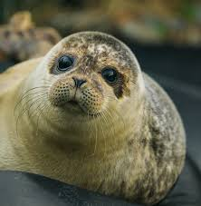
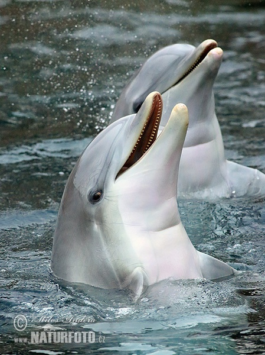
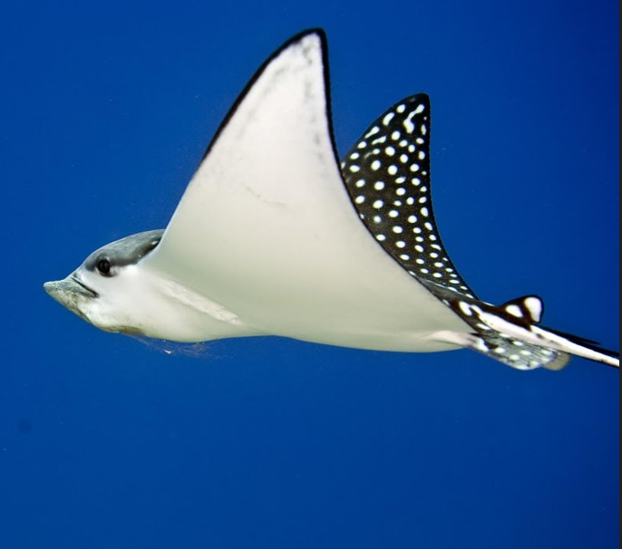
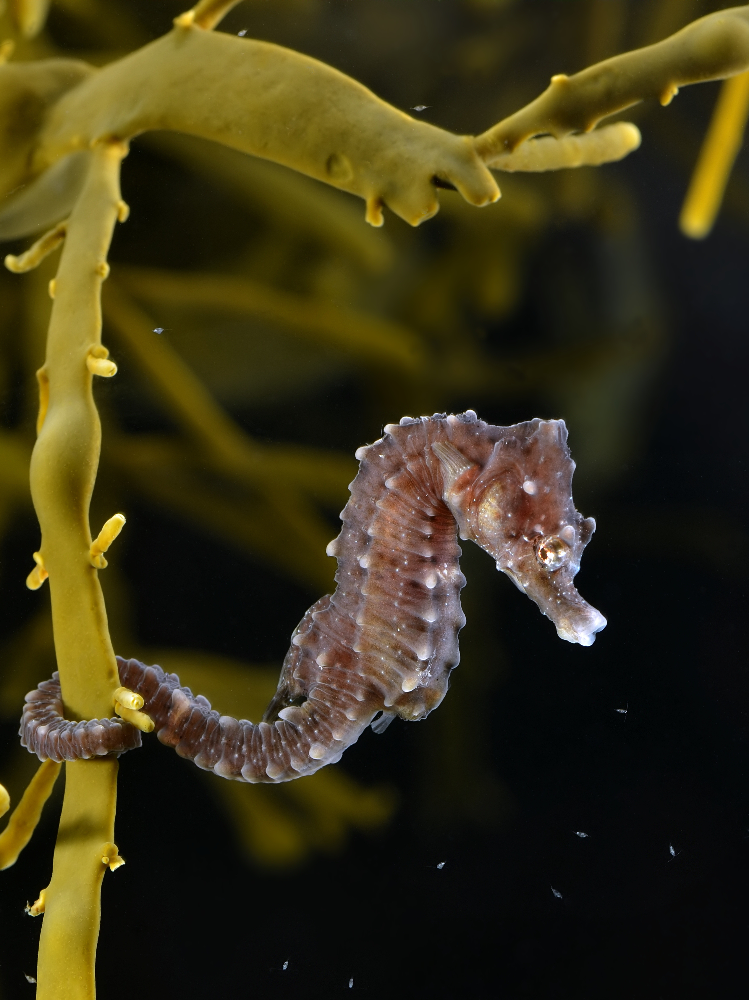

นากเล็กเล็บสั้น
ตัวผู้มีขนาดใหญ่กว่าตัวเมียเล็กน้อย ขนตามลำตัวมีสีเทาเข้มหรือสีน้ำตาล

แมวน้ำ
มีจมูกและปากที่แหลมแต่ตรงส่วนบนมีลักษณะแบน ยาวปานกลาง มีหน้าผากที่เห็นได้ชัดเจน

เพนกวิน
มีขนสีดำที่ด้านหลัง และขนสีขาวที่ด้านหน้าท้อง ซึ่งช่วยป้องกันเพนกวินจากสัตว์นักล่าต่างๆ

โลมาปากขวด
เป็นโลมาที่ฉลาด มีความแสนรู้ ขี้เล่น เป็นมิตรกับมนุษย์จึงนิยมเลี้ยงไว้แสดงตามสวนสัตว์

ปลากระเบนลายจุด
เป็นปลากระเบนขนาดเล็กที่อาศัยอยู่ตามแนวชายฝั่งที่เป็นพื้นทราย โตเต็มที่ลำตัวกว้างได้ 50 ซม.

ม้าน้ำ
ส่วนหัวลักษณะเหมือนม้าที่มีปากยาวยื่นออกไปเป็นท่อ ลำตัวปกคลุมด้วยเปลือกแข็งเป็นข้อๆ